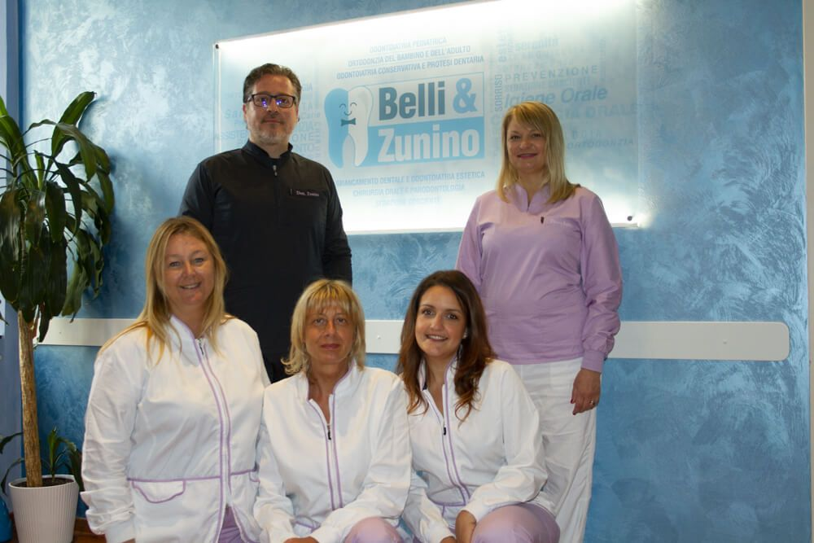
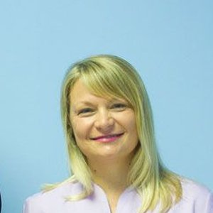
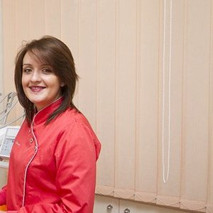
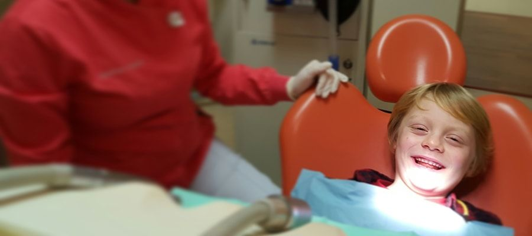
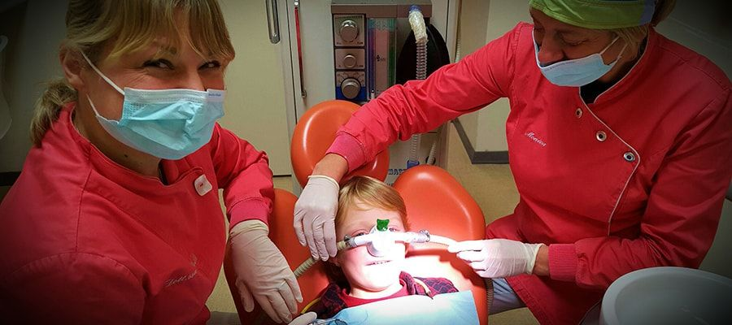
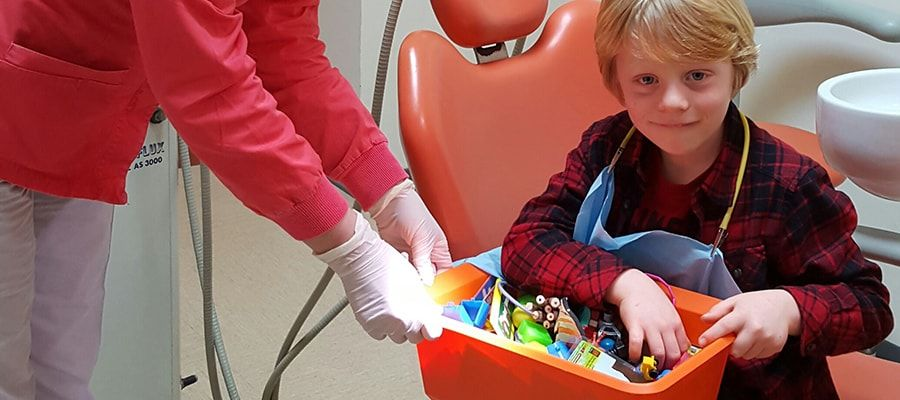

Lo studio associato della dottoressa Stefania Belli e del dottor Valerio Zunino. Ci occupiamo di prevenzione, cura ed estetica del sorriso per adulti e bambini, anche con la sedazione cosciente per chi ha paura del dentista.

Igiene orale, prevenzione della carie e della malattia parodontale, con controlli periodici.
Odontoiatria conservativa ed endodonzia, per salvare il dente naturale ogni volta che è possibile.
Sbiancamento con lampada Philips ZOOM2 e corone estetiche in zirconia-ceramica.
Apparecchi per bambini e adulti, allineatori trasparenti, dispositivi funzionali e di contenzione.
Odontoiatria pediatrica, con tempi e modi adatti alle diverse età, e collaborazione con la logopedia.
Chirurgia orale, estrazione dei denti del giudizio e impianti per sostituire i denti mancanti.
Protesi fisse e mobili, corone e ponti realizzati da laboratori odontotecnici qualificati.
Diagnosi e trattamento della parodontite, con terapie chirurgiche e non chirurgiche.
Trattamento dei disturbi temporo-mandibolari e dispositivi per le apnee ostruttive notturne.
Le radiografie endorali si fanno con il sistema Vistascan DÜRR ai fosfori. L'immagine arriva subito sul computer e il tempo di esposizione è molto più breve rispetto alle lastre tradizionali, un vantaggio soprattutto per i bambini.
Lo studio collabora con il reparto di chirurgia maxillo-facciale dell'Ospedale Santa Croce di Cuneo e dell'Ospedale Galliera di Genova, oltre che con le strutture pubbliche della provincia di Imperia che si occupano di logopedia.
Dal 2004 lo studio offre trattamenti personalizzati per la diagnosi, la terapia e la prevenzione di tutte le patologie del cavo orale.
Tutto lo staff, medici e personale ausiliario, frequenta con regolarità corsi di aggiornamento in odontoiatria e di primo soccorso.


Per chi ha paura del dentista, per i bambini e per chi è molto sensibile, le cure si possono fare con la sedazione cosciente.
Il paziente respira una miscela di ossigeno e protossido d'azoto attraverso una mascherina profumata. In pochi minuti si sente rilassato, l'ansia cala e anche il fastidio. Resta sveglio e con i riflessi intatti, e il gas viene eliminato con la respirazione appena finisce la seduta.
La dottoressa Belli e il dottor Zunino sono a disposizione per spiegare se la sedazione è indicata nel vostro caso.



Schede illustrate della Società Italiana di Parodontologia e Implantologia (SIdP). Quella sull'igiene orale spiega come usare bene lo spazzolino e come pulire gli spazi tra i denti.
Altre schede sulla salute orale si trovano su gengive.org.
Riceviamo su appuntamento in due sedi, a Imperia e a Sanremo.
Via XXV Aprile 22, 18100 Imperia
| Lunedì | 14.30 - 19.30 |
| Martedì | 9.00 - 14.30 |
| Mercoledì | 14.30 - 19.30 |
| Giovedì | 9.00 - 19.30 |
| Venerdì | 9.00 - 14.30 |
| Sabato e domenica | Chiuso |
Via Roma 187, 18038 Sanremo
| Lunedì | Chiuso |
| Martedì | Chiuso |
| Mercoledì | 9.00 - 19.00 |
| Giovedì | Chiuso |
| Venerdì | Chiuso |
| Sabato e domenica | Chiuso |
Per fissare un appuntamento chiamate la sede più comoda o scriveteci.